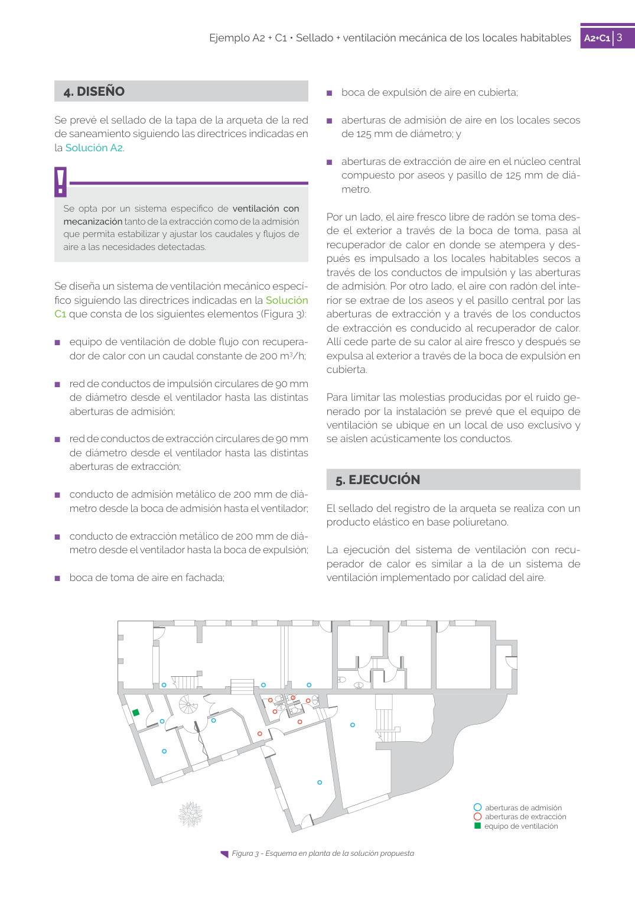

Guia de rehabilitacion frente al radon Fichas · edición sin-fecha · capa guia
Documento GUIA-PDF-f3314b0414fe · SHA-256 del PDF e58e54b822cf4ab00e258f0eb50c0f06a8c04e3730a7f530d224485e2a5bb02e
Copia fiel del PDF fuente · Fuente oficial
Ficha de la disposición en la fuente oficial
Créditos y autoría en el PDF fuente. Reproducción con cita de fuente y autores.
Permiso literal: Se permite la reproducción total o parcial del contenido de este nible en el momento de su publicación. No se aceptará por las institu documento siempre y cuando se cite la fuente original
Este documento ha sido elaborado por el Instituto de ciencias
de la construcción Eduardo Torroja (IETcc) bajo la supervisión
de la Dirección General de Agenda Urbana y Arquitectura del
Ministerio de Transportes, Movilidad y Agenda Urbana (MITMA).
El IETcc, perteneciente al Consejo Superior de Investigaciones
Científicas (CSIC), es el centro de investigación en edificación
de referencia en España. La Unidad de Calidad en la Construc
ción del IETcc asesora al MITMA en la elaboración del Código
Técnico de la Edificación que, desde el año 2019, cuenta con la
sección HS6 Protección frente a la exposición al radón.
Dirección y Coordinación:
Ministerio de Transportes, Movilidad y Agenda Urbana
Isabel Marcos Anasagasti
Raquel Lara Campos
Eduardo González de Prado
Instituto de ciencias de la construcción Eduardo Torroja CSIC
Pilar Linares Alemparte
Autoras:
Pilar Linares Alemparte
Sonia García Ortega
Colaboradoras:
Virginia Sánchez Ramos
Karina Angélica García Pardo
Edita:
Centro de Publicaciones Secretaría General Técnica
Ministerio de Transportes, Movilidad y Agenda Urbana©
Entidad colaboradora:
Consejo Superior de Investigaciones Científicas · CSIC
Ministerio de Ciencia e Innovación
Catálogo de publicaciones de la Administración General
del Estado: publicacionesoficiales.boe.es
Centro virtual de publicaciones del Ministerio de Transpor
tes, Movilidad y Agenda Urbana: www.mitma.gob.es
Página web del Código Técnico de la Edificación:
SECRETARÍA GENERAL DE www.codigotecnico.org AGENDA URBANA Y VIVIENDA MINISTERIO GOBIERNO DE TRANSPORTES, MOVILIDAD DE ESPAÑA Y AGENDA URBANA DIRECCIÓN GENERAL DE
Maquetación y diseño gráfico: AGENDA URBANAY ARQUITECTURA
Lapizmente. Estrategia • Diseño Gráfico
CIENCIAFotografía portada: GOBIERNODE ESPAÑA MINISTERIODEE INNOVACIÓN
Sonia García Ortega
Los contenidos o ideas recogidas en este documento pertenecen a
sus autores. Este documento está basado en el conocimiento dispo Se permite la reproducción total o parcial del contenido de este
nible en el momento de su publicación. No se aceptará por las institu documento siempre y cuando se cite la fuente original y a sus
ciones ni los autores implicados responsabilidad de ningún tipo por el autores.
uso de estas recomendaciones. Las figuras tienen carácter ilustrativo
y no deben interpretarse como detalles constructivos.Formatos: JSON del segmento · Markdown
4. DISEÑO Se prevé el sellado de la tapa de la arqueta de la red de saneamiento siguiendo las directrices indicadas en la Solución A2. Se opta por un sistema específico de ventilación con mecanización tanto de la extracción como de la admisión que permita estabilizar y ajustar los caudales y flujos de aire a las necesidades detectadas. Se diseña un sistema de ventilación mecánico especí fico siguiendo las directrices indicadas en la Solución C1 que consta de los siguientes elementos (Figura 3): ■ equipo de ventilación de doble flujo con recupera dor de calor con un caudal constante de 200 m3/h; ■ red de conductos de impulsión circulares de 90 mm de diámetro desde el ventilador hasta las distintas aberturas de admisión; ■ red de conductos de extracción circulares de 90 mm de diámetro desde el ventilador hasta las distintas aberturas de extracción; ■ conducto de admisión metálico de 200 mm de diá metro desde la boca de admisión hasta el ventilador; ■ conducto de extracción metálico de 200 mm de diá metro desde el ventilador hasta la boca de expulsión; ■ boca de toma de aire en fachada; ■ boca de expulsión de aire en cubierta; ■ aberturas de admisión de aire en los locales secos de 125 mm de diámetro; y ■ aberturas de extracción de aire en el núcleo central compuesto por aseos y pasillo de 125 mm de diá metro. Por un lado, el aire fresco libre de radón se toma des de el exterior a través de la boca de toma, pasa al recuperador de calor en donde se atempera y des pués es impulsado a los locales habitables secos a través de los conductos de impulsión y las aberturas de admisión. Por otro lado, el aire con radón del inte rior se extrae de los aseos y el pasillo central por las aberturas de extracción y a través de los conductos de extracción es conducido al recuperador de calor. Allí cede parte de su calor al aire fresco y después se expulsa al exterior a través de la boca de expulsión en cubierta. Para limitar las molestias producidas por el ruido ge nerado por la instalación se prevé que el equipo de ventilación se ubique en un local de uso exclusivo y se aíslen acústicamente los conductos.
